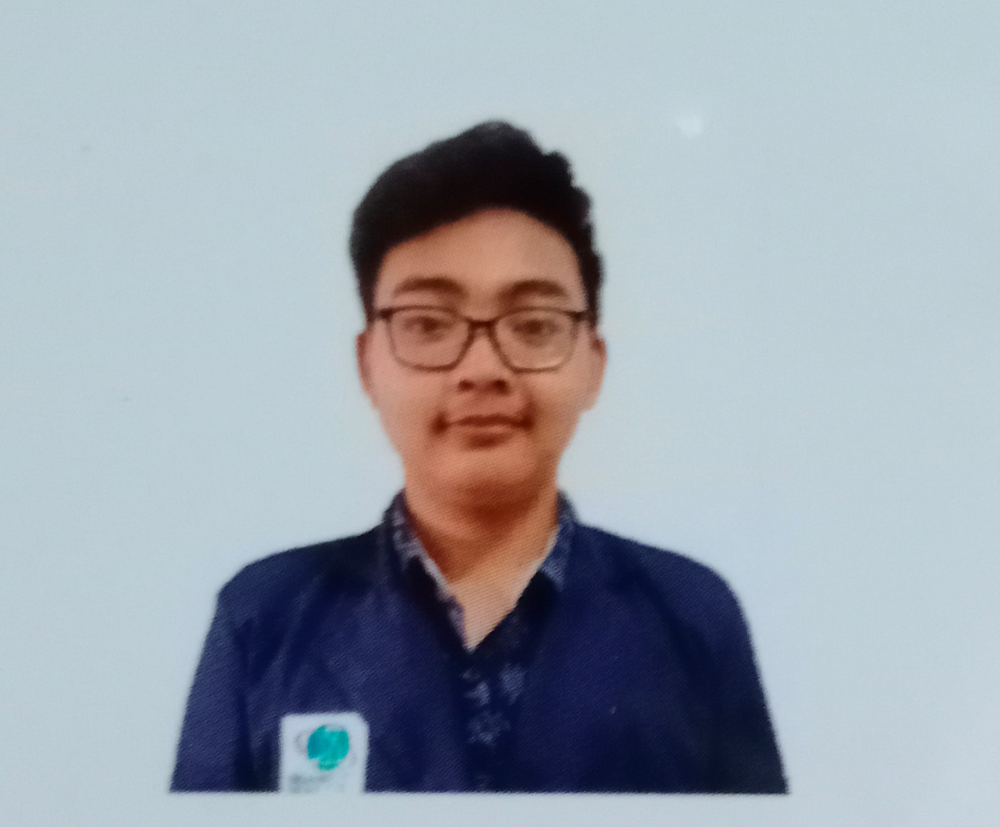

Curriculum Vitae

Tentang Saya
Saya orang yang cepat belajar
dan mudah diajari, dapat bekerja
sama dengan kelompok maupun
perorangan, jujur, amanah, hoby
saya adalah berenang/Traveling
| Data Pribadi |
| |
| Nama |
: |
Alfian Muhamad Rizal Yuristya |
| Tempat, Tanggal Lahir |
: |
Jakarta, 16 Maret 2001 |
| Umur |
: |
19 Tahun |
| Kelamin |
: |
Pria |
| Agama |
: |
Islam |
| Status |
: |
Belum Menikan |
| Alamat |
: |
Jl. RTM No.108 RT. 04 RW. 05
Kel. Tugu Kec. Cimanggis Depok |
Pendidikan Formal
- 2007 – 2013 SDIT Raflesia Depok
- 2013 – 2016 SMP Negeri 8 Depok
- 2016 – 2019 SMK Negeri 3 Depok – Teknik Jaringan Dan Komputer
- 2019 - Sekarang STT Nurul Fikri - Teknik Informatika
Pendidikan Non Formal
- Kursus Linux Complite NF
- Kursus Python NF
- Kursus Web Complite NF
- Kursus Yii Framework NF
- Kursus Edit Video Adobe Premiere dan After Effect NF
- Kursus Disain Grafis Adobe Photoshop dan Corel Draw NF
- Pelatihan Bahasa Inggris di Teachcast Little Eagle
Kemampuan
- Ms. Office
- Linux
- Web Programing
- Mikrotik
- Disain Grafis
Pengalaman
- Universitas Indonesia - 2018
Magang Dibagian IT Support
- PT. Sibisnis - 2019>
Kerja Bagian It Support dan Customer Support
Kontak Saya